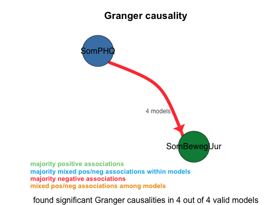

Visualize the residuals of a VAR model
Usage
visualize_residuals(varest)
Arguments
- varest
- the varest object.
Description
This function takes a varest object and plots the residuals and the squared residuals.
Examples
d<-load_file("../data/input/pp4 nieuw compleet met 140min.sav",log_level=3) d<-set_timestamps(d,date_of_first_measurement='2010-04-14')set_timestamps: dates range from 2010-04-14 to 2010-06-17 set_timestamps: using additional exogenous variables in models: Sunday, Monday, Tuesday, Wednesday, Thursday, Fridayd<-var_main(d,c('SomBewegUur','SomPHQ'),log_level=3,exogenous_variables='Work')==================== var_main(av_state, vars = c("SomBewegUur", "SomPHQ"), log_level = 3, exogenous_variables = "Work") Starting VAR with variables: SomBewegUur, SomPHQ, for subset: 1 ==================== Done. Processed 18 distinct models, of which 4 were valid. Tested 46 of 72 ( 63.89%) of the combinatorial search space at the given lags (1, 2). Granger causality summary of all 16 unrestricted models: 100.00% SomPHQ -Granger causes- SomBewegUur (16 models) (sign: 16 -) Granger causality summary of all 4 valid models: 100.00% SomPHQ -Granger causes- SomBewegUur (4 models) (sign: 4 -) Granger causality summary of all 2 valid unrestricted models: 100.00% SomPHQ -Granger causes- SomBewegUur (2 models) (sign: 2 -)
Granger causality plot saved to "pp4 nieuw compleet met 140min_7.pdf" (5377) Summary of all valid models: lag: 50.00% 1 (2 models) 50.00% 2 (2 models) apply_log_transform: 100.00% FALSE (4 models) include_day_dummies: 100.00% TRUE (4 models) The valid models (sorted by AIC score): A: (AIC: 280.387, BIC: 303.962) : SomPHQ -Granger causes- SomBewegUur (8.08e-08) Lag: 2 Log transform: NO Exogenous variables: Work: 43,50,51,55,57,64,65 Sunday: 5,12,19,26,33,40,47,54,61 Tuesday: 7,14,21,28,35,42,49,56,63 Friday: 3,10,17,24,31,38,45,52,59 SomPHQ outliers (3.5x std. of res.): 5 Constraints: [SomBewegUur]SomBewegUur.l1 = 0 [SomBewegUur]SomBewegUur.l2 = 0 [SomBewegUur]SomPHQ_outliers = 0 [SomPHQ]SomBewegUur.l1 = 0 [SomPHQ]SomPHQ.l1 = 0 [SomPHQ]SomBewegUur.l2 = 0 [SomPHQ]Work = 0 [SomPHQ]Tuesday = 0 [SomPHQ]Friday = 0 Resulting Formulas: SomBewegUur = SomPHQ.l1 + SomPHQ.l2 + const + Work + Sunday + Tuesday + Friday SomPHQ = SomPHQ.l2 + const + SomPHQ_outliers + Sunday B: (AIC: 305.363, BIC: 361.084) : SomPHQ -Granger causes- SomBewegUur (1.1e-06) Lag: 2 Log transform: NO Exogenous variables: Work: 43,50,51,55,57,64,65 Sunday: 5,12,19,26,33,40,47,54,61 Monday: 6,13,20,27,34,41,48,55,62 Tuesday: 7,14,21,28,35,42,49,56,63 Wednesday: 1,8,15,22,29,36,43,50,57,64 Thursday: 2,9,16,23,30,37,44,51,58,65 Friday: 3,10,17,24,31,38,45,52,59 SomPHQ outliers (3.5x std. of res.): 5 Constraints: none C: (AIC: 306.994, BIC: 326.424) : SomPHQ -Granger causes- SomBewegUur (7.98e-07) Lag: 1 Log transform: NO Exogenous variables: Work: 43,50,51,55,57,64,65 Sunday: 5,12,19,26,33,40,47,54,61 Tuesday: 7,14,21,28,35,42,49,56,63 Friday: 3,10,17,24,31,38,45,52,59 SomPHQ outliers (3x std. of res.): 4, 5 Constraints: [SomBewegUur]SomBewegUur.l1 = 0 [SomBewegUur]SomPHQ_outliers = 0 [SomPHQ]SomBewegUur.l1 = 0 [SomPHQ]Work = 0 [SomPHQ]Sunday = 0 [SomPHQ]Tuesday = 0 [SomPHQ]Friday = 0 Resulting Formulas: SomBewegUur = SomPHQ.l1 + const + Work + Sunday + Tuesday + Friday SomPHQ = SomPHQ.l1 + const + SomPHQ_outliers D: (AIC: 327.402, BIC: 374.898) : SomPHQ -Granger causes- SomBewegUur (8.68e-06) Lag: 1 Log transform: NO Exogenous variables: Work: 43,50,51,55,57,64,65 Sunday: 5,12,19,26,33,40,47,54,61 Monday: 6,13,20,27,34,41,48,55,62 Tuesday: 7,14,21,28,35,42,49,56,63 Wednesday: 1,8,15,22,29,36,43,50,57,64 Thursday: 2,9,16,23,30,37,44,51,58,65 Friday: 3,10,17,24,31,38,45,52,59 SomPHQ outliers (3x std. of res.): 4, 5 Constraints: nonevisualize_residuals(d$accepted_models[[1]]$varest)